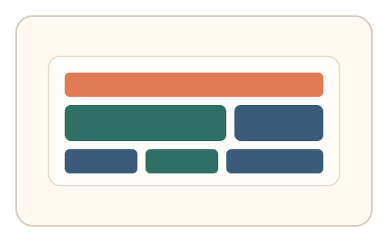
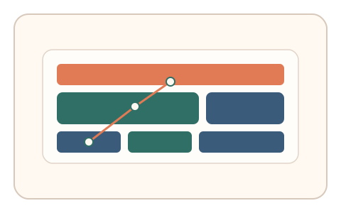
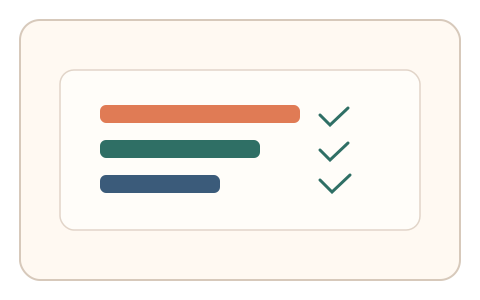

#26
视觉思考范式：空间/结构/直觉
已扩展
视觉层级压缩
让用户按视觉层级顺序点击关键元素，验证层级直觉排序的一致性。
概念原文
给出复杂界面样式，要求用户按“视觉层级”依次点击最重要元素；记录点击序列与停顿时间。
验证人类对视觉层级的直觉排序，而非语义理解。
研究背景
视觉层级由大小、对比、位置等线索共同驱动，用户在短时间内能形成相对一致的注意力排序。测量点击顺序与停顿节奏可形成稳定的行为信号，而非依赖语义理解。
核心机制
- 展示包含多层级元素的界面样式。
- 要求用户依次点击最重要的元素。
- 记录点击序列与每次停顿时间。
- 计算层级排序与预期模型的一致度。
用户流程
- 步骤 1：用户看到一组视觉层级明显的元素。
- 步骤 2：用户按重要性顺序点击元素。
- 步骤 3：系统评估点击序列并判定。
判定信号
点击序列与层级排序的相关度
人类对视觉层级的直觉排序通常高度一致。
停顿时间与层级跨度关系
层级跨度越大，决策停顿通常越短。
判定逻辑
计算点击序列与层级模型的一致度，并结合停顿分布；一致度过低或停顿模式异常判异常。
对抗面
- 脚本依据尺寸与对比规则排序点击
- 重放真实用户序列
防御与缓解
- 随机化层级线索组合并加入冲突线索
- 多轮任务对跨题稳定性进行检查
- 叠加鼠标轨迹与微时序信号增强鲁棒性
可达性与风险
提供简化布局与键盘排序模式，避免对视觉障碍用户造成负担。
- 设计风格差异导致层级判断偏差
- 小屏设备降低层级线索显著度
可视化状态

状态 1：层级界面
元素大小与对比形成视觉层级。

状态 2：点击排序
按重要性依次点击关键元素。

状态 3：序列评估
对比点击顺序与层级模型。
参考资料
Visual hierarchy
说明视觉层级与注意力排序的基础。
Salience (neuroscience)
说明显著性线索对注意力的影响。